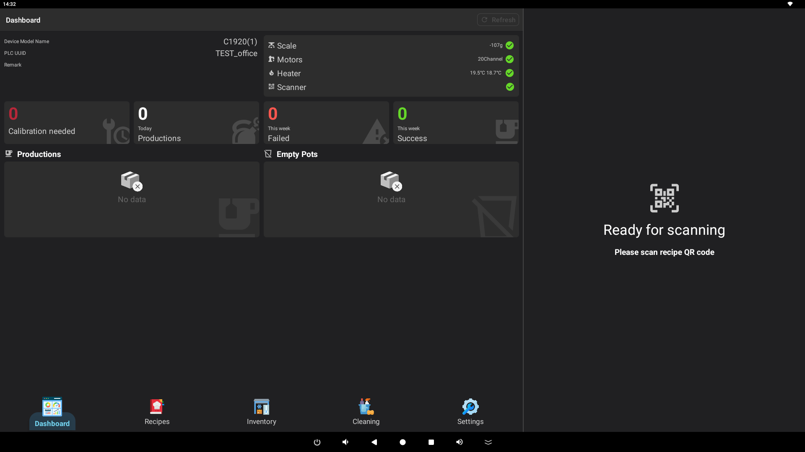
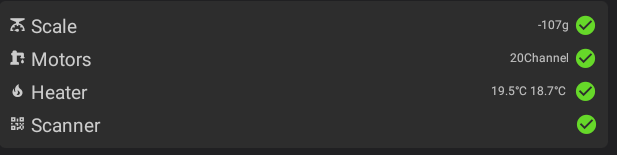
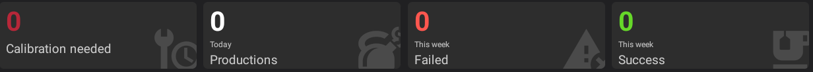
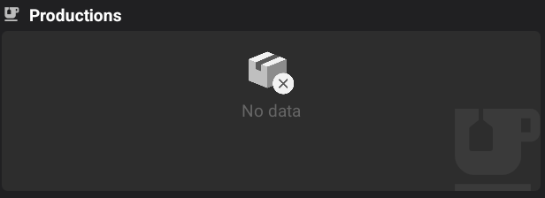
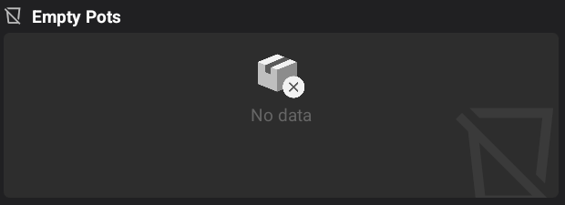

User Guide: Home Screen Dashboard
The Home screen is the central dashboard for the mixer system. It provides real-time information about the machine's status, recent activities, and essential maintenance requirements.

1. Machine Information
Located at the top left of the dashboard, this section displays details about the current machine and store.
- Store Details: Shows the store name, store code, and store type.
- Machine Details: Includes the device model name, hardware version, and unique PLC identifier (PLC UUID).
- Network Status: If the machine loses WiFi or internet connectivity, a warning will appear here with a button to open the system's WiFi settings.
- Refresh: Use the refresh button in the header or within this panel to update the machine information from the server.
2. Hardware Component Status
The status panel at the top right monitors the health and current readings of the machine's critical hardware.

- Scale: Displays the current net weight in grams. A green checkmark indicates the scale is online. Tapping this item allows you to perform a weight calibration or test.
- Motors: Shows the number of active motor channels and their connection status.
- Heaters: Displays the current temperature (in °C) for the heating elements.
- Scanner: Indicates whether the QR code/barcode scanner is ready to process orders.
3. Usage Statistics
This section provides a quick summary of the machine's performance and maintenance needs.

- Calibration Needed: Shows the number of ingredient pots that require calibration. Tapping this card will take you to the calibration settings.
- Today's Orders: Displays the total number of recipes successfully produced today. Tapping this card opens the detailed order log.
- This Week (Failed): Shows the count of failed production attempts during the current week.
- This Week (Success): Shows the total number of successful productions during the current week.
4. Recent Recipes & Activity
A live feed of the most recent production records.

- Recipe List: Shows the name of the recipe, the target volume (in ml), and any weight error detected during production.
- Order ID: Displays the unique order identifier for each production.
- Status Indicators: Failed productions are crossed out and marked with a red alert icon.
- Time: Shows exactly when each recipe production started.
- Details: Tapping any recipe in this list will open the detailed recipe view.
5. Low/Empty Pots Management
Monitors the ingredient levels in the machine.

- Low Ingredients: Lists all pots where the ingredient level is low (below 1500ml) or empty.
- Refilling: Tap on any ingredient in this list to open the refill interface, allowing you to top up the pot and update the system's inventory.
Tip: If you encounter any hardware warnings (red icons), check the Hardware Status panel first to identify the affected component.